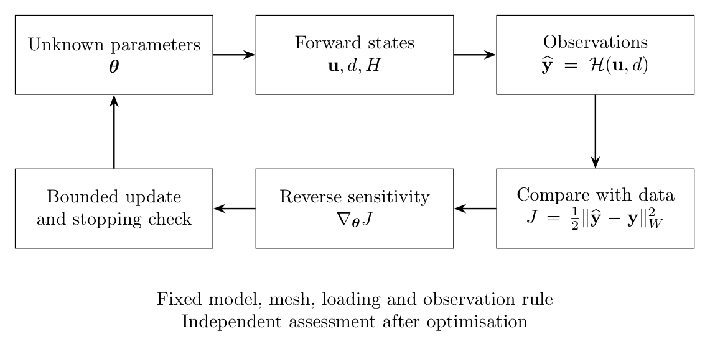
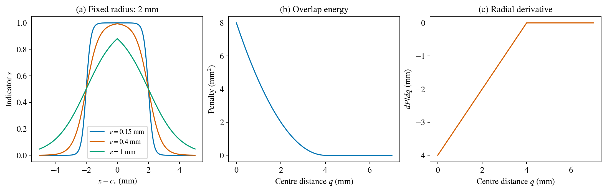
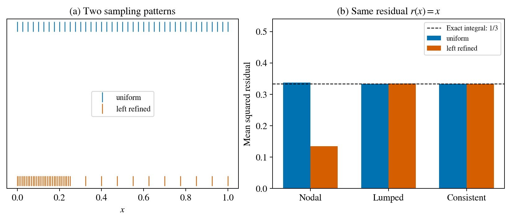
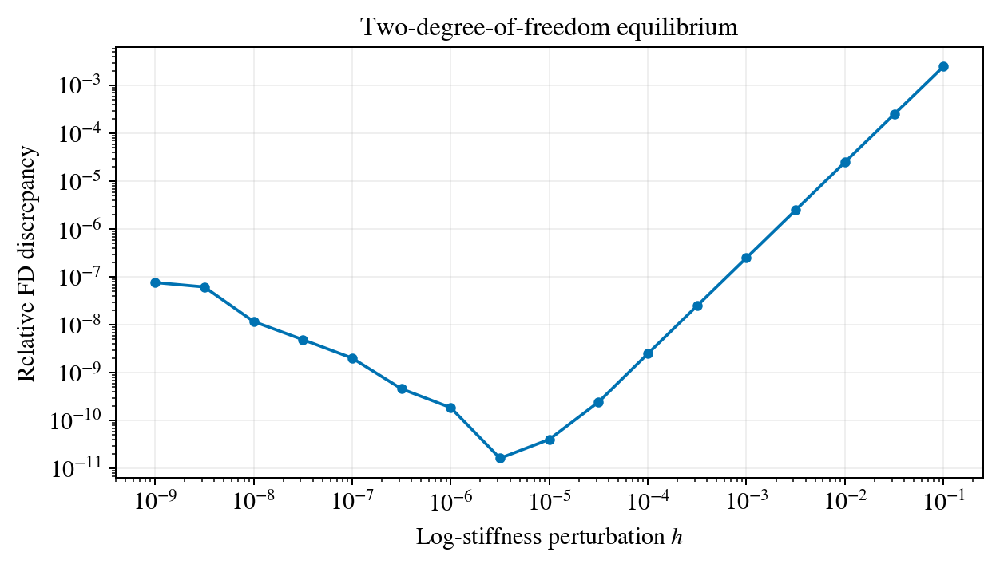
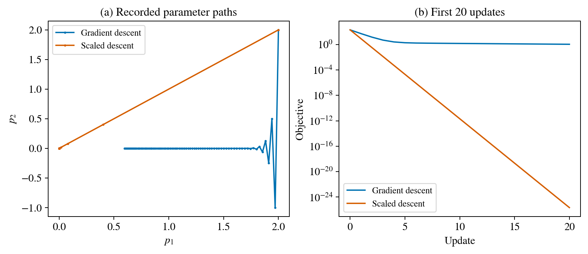
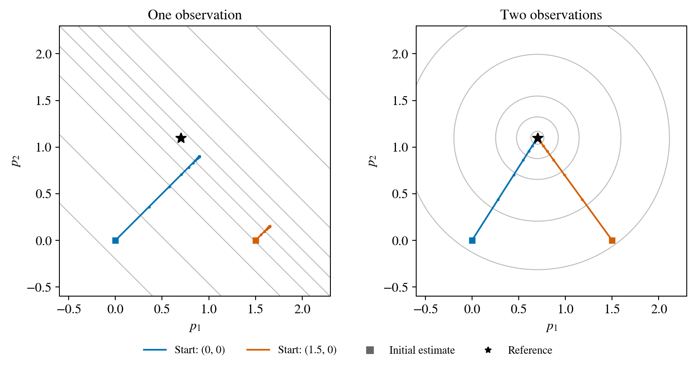
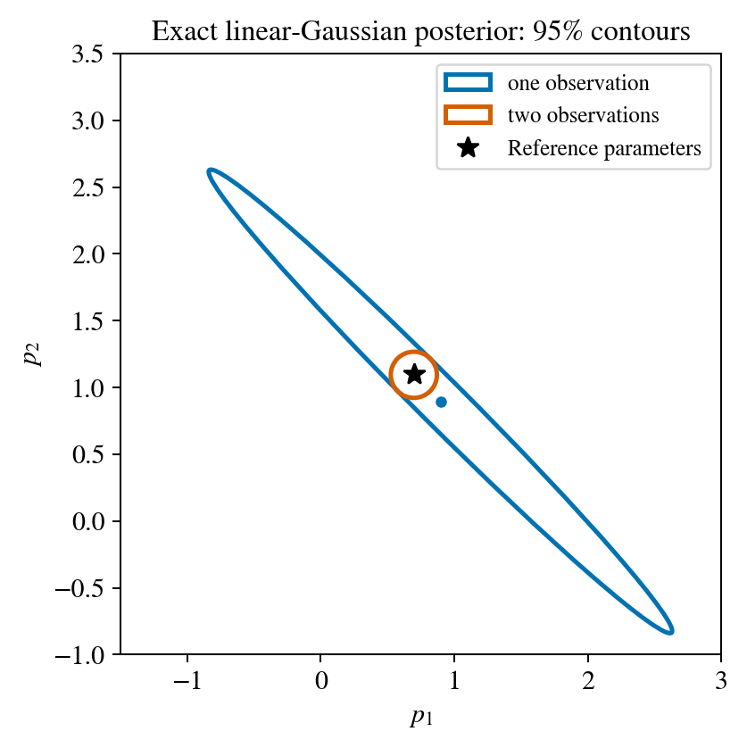
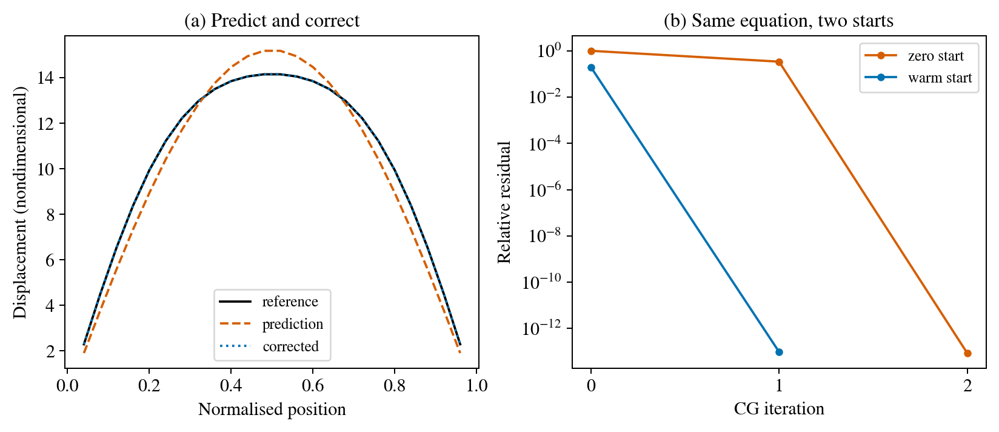

From gradients to reliable inverse experiments¶
A self-contained computational notebook¶
We work from particle geometry and observations to gradients, optimisation, uncertainty and a learned initial guess. All derivations needed for the seven executed examples, the complete numerical and plotting code, and the worked answers are included below. External references are optional.
Prerequisites: scalar differentiation, vectors and matrix multiplication. The examples are analytic and small linear-algebra models, adapted to questions that arise in fracture inversion. Their successful results do not constitute a new full fracture-inverse demonstration.
Environment and execution¶
Python 3.11, NumPy, PyTorch, Matplotlib 3.7 or newer, and IPython are required. Jupyter or another notebook reader displays the retained outputs. No local data files, helper modules, network downloads or course checkout are needed. Run the cells in order. This project’s research executions use HPC. Installation and queue time are separate from whole-notebook execution time. Dependencies can be installed in an isolated environment with:
python -m pip install numpy torch 'matplotlib>=3.7' ipython jupyter
What to inspect¶
State the unknowns and observations before interpreting a recovery.
Predict each plot, run its cells, then compare with the worked explanation.
Keep derivative correctness, recovered parameters and computational cost as separate questions.
Full numerical arrays and check outcomes remain in the final cell’s in-memory dictionaries, including inconvenient or negative findings.

import time
notebook_started = time.perf_counter()
import platform
from io import BytesIO
import numpy as np
import torch
import matplotlib
matplotlib.use("Agg")
import matplotlib.pyplot as plt
from matplotlib.patches import Ellipse
from matplotlib.lines import Line2D
from IPython.display import Image, display
torch.set_default_dtype(torch.float64)
torch.set_num_threads(2)
plt.rcParams.update({
"font.family": "STIXGeneral", "mathtext.fontset": "stix",
"font.size": 12, "axes.titlesize": 13, "axes.labelsize": 12,
"legend.fontsize": 10, "figure.dpi": 130,
})
BLUE, ORANGE, GREEN = "#0072B2", "#D55E00", "#009E73"
results, checks = {}, {}
d = results
def save(fig, name):
buffer = BytesIO()
fig.savefig(buffer, format="png", dpi=180, bbox_inches="tight", pad_inches=.12)
display(Image(data=buffer.getvalue(), alt=name.replace("_", " ")))
plt.close(fig)
print({"python": platform.python_version(), "torch": torch.__version__,
"numpy": np.__version__, "matplotlib": matplotlib.__version__,
"device": "CPU", "dtype": str(torch.get_default_dtype())})
{'python': '3.11.15', 'torch': '2.8.0+cu128', 'numpy': '2.4.2', 'matplotlib': '3.10.8', 'device': 'CPU', 'dtype': 'torch.float64'}
Representing particles and testing their geometry¶
The unknowns¶
Consider a circular stiff particle with centre \(\mathbf c=(c_x,c_y)\) and radius \(r\). Its geometry is described by three numbers. For three particles, the parameter vector has nine entries:
Coordinates and radii have units of length. Material contrasts, loading, boundary conditions, mesh and observation times are prescribed in a geometry recovery. If any of these are also unknown, they must be added to the problem statement and sensitivity analysis.
Moving a material field on a fixed mesh¶
A sharp indicator switches from zero to one at the particle boundary. When that boundary passes a mesh point, the nodal material assignment jumps. A smooth indicator offers a different parameterisation:
The transition width \(\varepsilon\) has units of length. At distance \(r\), \(s=1/2\). One possible stiffness field is
where \(\kappa_E>1\) describes a stiff particle. The physical mesh stays fixed; the material values change as the centre moves. This differs from remeshing a sharp geometric boundary. The transition width is part of the model and must be reported.
Let \(q=\|\mathbf x-\mathbf c\|\). Differentiating the sigmoid gives \(\partial s/\partial r=s(1-s)/\varepsilon\) and, for \(q>0\), \(\nabla_{\mathbf c}s=s(1-s)(\mathbf x-\mathbf c)/(\varepsilon q)\). These formulas explain where geometric sensitivity comes from. It is concentrated near the transition, where \(s(1-s)\) is largest. A material derivative still has to pass through equilibrium and the observation loss before it becomes a useful inverse-update direction.
The sigmoid smooths the interface. The Euclidean norm still has a directional ambiguity exactly at the centre. A code that regularises that distance must document its formula and test the centre separately.
def geometry():
distances = torch.linspace(0, 7, 281, requires_grad=True)
energy = torch.relu(4-distances).square()/2
derivative = torch.autograd.grad(energy.sum(), distances)[0]
p = torch.zeros((2, 2), requires_grad=True)
radius = torch.tensor([2., 2.])
penalty = torch.relu(radius.sum()-torch.linalg.vector_norm(p[0]-p[1])).square()/2
g = torch.autograd.grad(penalty, p)[0]
x = np.linspace(-5, 5, 401)
epsilon = [.15, .4, 1.]
indicators = [1/(1+np.exp((np.abs(x)-2)/eps)) for eps in epsilon]
return {'distance': distances.detach().tolist(), 'energy': energy.detach().tolist(),
'derivative': derivative.tolist(), 'coincident_gradient': g.tolist(),
'x': x.tolist(), 'epsilon': epsilon, 'indicators': [a.tolist() for a in indicators]}, {
'overlap_gradient_finite': bool(torch.isfinite(g).all()),
'coincident_centres_have_zero_separating_gradient': bool((g==0).all()),
'separated_energy_zero': float(energy[-1].detach()) == 0,
'tangent_energy_zero': float(torch.relu(torch.tensor(4.)-4)**2)==0}
results['geometry'], outcomes = geometry()
checks.update({key: bool(value) for key, value in outcomes.items()})
print(outcomes)
assert all(outcomes.values())
{'overlap_gradient_finite': True, 'coincident_centres_have_zero_separating_gradient': True, 'separated_energy_zero': True, 'tangent_energy_zero': True}
g=d['geometry']
fig,ax=plt.subplots(1,3,figsize=(12,3.7),layout='constrained')
for eps,y,c in zip(g['epsilon'],g['indicators'],[BLUE,ORANGE,GREEN]):ax[0].plot(g['x'],y,color=c,label=f'$\\varepsilon={eps:g}$ mm')
ax[0].set(xlabel='$x-c_x$ (mm)',ylabel='Indicator $s$',title='(a) Fixed radius: 2 mm')
ax[0].legend()
ax[1].plot(g['distance'],g['energy'],color=BLUE)
ax[1].set(xlabel='Centre distance $q$ (mm)',ylabel='Penalty (mm$^2$)',title='(b) Overlap energy')
ax[2].plot(g['distance'],g['derivative'],color=ORANGE)
ax[2].set(xlabel='Centre distance $q$ (mm)',ylabel='$dP/dq$ (mm)',title='(c) Radial derivative')
save(fig,'geometry')

Original teaching calculations: smooth indicators across a circular particle, overlap energy and its radial derivative. The material curves are analytic, not simulated crack fields.
For several particles, a bounded union is \(s_{\mathrm{union}}=1-\prod_i(1-s_i)\). Overlapping transition regions need an explicit material-mixture rule; adding indicators can exceed one.
Separation does not identify the particles¶
An overlap penalty discourages two circles from occupying the same region. For two equal-radius particles, let \(q=\|\mathbf c_1-\mathbf c_2\|\). A simple teaching energy is
For \(0<q<2r\), \(P'(q)=q-2r\). At \(q>2r\), the energy and gradient are zero. The penalty enforces geometric plausibility; it supplies no measurement of the true particle positions.
At coincident centres, the Euclidean distance has no unique direction of increase. An autodiff library can return a finite zero subgradient. Thus the code can be numerically finite while providing no separating direction. A declared, target-independent perturbation of duplicate initial centres is one possible remedy. Changing the penalty is another modelling choice that needs its own test.
Exercise 1: predict the transition¶
(a) What is \(s\) at the centre, at the stated radius and far outside it? (b) Sketch what happens when \(\varepsilon\) doubles. (c) Explain why changing \(\varepsilon\) merely to obtain a nicer crack picture would change the inverse problem.
Worked solution¶
At the centre the value is \(1/(1+e^{-r/\varepsilon})\), close to one when \(r/\varepsilon\) is large. At the radius it is exactly one half; far outside it approaches zero. Doubling the width broadens the transition and changes the spatial stiffness distribution. The forward response and sensitivities therefore change, even though the nominal centre and radius stay fixed.
Exercise 2: interpret the coincidence test¶
The retained check finds a finite zero gradient for two coincident centres. Does this establish that the overlap problem is solved? Propose a test with a very small, prescribed separation and compare the direction of the update.
Worked solution¶
No. The overlap energy is positive. The zero vector supplies no direction in which to move. A small separation removes the directional ambiguity and the negative gradient moves the centres apart. This is a geometry test; it gives no evidence that a fracture observation can localise either particle.
Exercise 3: a geometry checklist¶
Check positive radii, admissible centres, minimum separation, field bounds, permutation invariance and finite gradients. Check the complete circles, not only their centres, against the specimen boundary.
Worked checklist¶
For a rectangular plate, require each centre to remain at least its radius from every edge. Swapping particle labels should leave the union unchanged. Test finite derivatives at the centre, near the interface and outside the particle. An overlap check is separate from the measurement residual.
The ADL4P sphere-packing exercise motivates this diagnostic. Our plate is nonperiodic; a circle leaving one edge does not re-enter at the opposite edge.
From measurements to a loss¶
Separate the state from the measurement¶
The solver computes displacement \(\mathbf u\), damage \(d\) and history variables. A camera or displacement sensor observes a function of this state. Write \(\widehat{\mathbf y}=\mathcal H(\mathbf u,d)\), where \(\mathcal H\) is the observation operator, and define the residual \(\mathbf r=\widehat{\mathbf y}-\mathbf y^{\mathrm{obs}}\).
For nodal synthetic damage, \(\mathcal H\) simply selects the required nodes and times. For a registered displacement measurement at point \(\mathbf x_p\) inside a triangle, use the shape functions:
The containing element and interpolation weights belong to the observation setup. Points outside the specimen and invalid measurements require masks. A segmented crack image is not automatically a measured nodal damage field. Its comparison requires a declared image/phase-field observation model.
For a triangle with vertices \((0,0),(1,0),(0,1)\), the shape functions are \(N_1=1-x-y\), \(N_2=x\), \(N_3=y\). A measurement at \((0.25,0.25)\) therefore uses weights \((0.5,0.25,0.25)\). If one displacement component at the vertices is \((0,2,4)\), its predicted value at that measurement is \(1.5\) in the same displacement units. The weights sum to one and reproduce a constant field. On a general triangle, solve for the barycentric weights using its vertex coordinates. Register camera pixels to physical specimen coordinates first.
Nodal averages and spatial integrals¶
The nodal mean square is \(J_{\mathrm{node}}=N^{-1}\sum_i r_i^2\). An area-normalised field error is
These have the same units but different spatial weighting. Adding nodes to one part of the plate changes its contribution to the nodal mean. A spatial integral weights physical area.
For linear interpolation on a triangle of area \(A_e\), the consistent mass matrix is
A lumped approximation assigns \(A_e/3\) to each vertex. It is convenient, but it is not the same integral of the squared linear interpolant.
def quadrature():
records=[]
for name,x in [('uniform',np.linspace(0,1,41)),('left_refined',np.r_[np.linspace(0,.25,31),np.linspace(.25,1,11)[1:]])]:
h=np.diff(x)
lump=np.zeros_like(x)
lump[:-1]+=h/2
lump[1:]+=h/2
consistent=float(np.sum(h*(x[:-1]**2+x[:-1]*x[1:]+x[1:]**2)/3))
records.append({'name':name,'x':x.tolist(),'residual':x.tolist(),
'nodal_mse':float(np.mean(x*x)), 'lumped_mse':float(np.dot(lump,x*x)),
'consistent_mse':consistent,'exact_integral':1/3})
return records, {'consistent_integral_exact_on_both_meshes':all(abs(r['consistent_mse']-1/3)<1e-14 for r in records),
'nodal_average_changes_with_sampling':abs(records[0]['nodal_mse']-records[1]['nodal_mse'])>.05}
results['quadrature'], outcomes = quadrature()
checks.update({key: bool(value) for key, value in outcomes.items()})
print(outcomes)
assert all(outcomes.values())
{'consistent_integral_exact_on_both_meshes': True, 'nodal_average_changes_with_sampling': True}
q=d['quadrature']
fig,ax=plt.subplots(1,2,figsize=(9,3.8),layout='constrained')
for r,y,c in zip(q,[1,0],[BLUE,ORANGE]):ax[0].plot(r['x'],np.full(len(r['x']),y),'|',ms=13,color=c,label=r['name'].replace('_',' '))
ax[0].set(xlabel='$x$',yticks=[],title='(a) Two sampling patterns')
ax[0].legend(loc='center')
x=np.arange(3)
for i,r in enumerate(q):ax[1].bar(x+(i-.5)*.35,[r['nodal_mse'],r['lumped_mse'],r['consistent_mse']],width=.35,label=r['name'].replace('_',' '),color=[BLUE,ORANGE][i])
ax[1].axhline(1/3,color='black',ls='--',lw=1,label='Exact integral: 1/3')
ax[1].set(xticks=x,xticklabels=['Nodal','Lumped','Consistent'],ylim=(0,.54),ylabel='Mean squared residual',title='(b) Same residual $r(x)=x$')
ax[1].legend(fontsize=9,loc='upper right')
save(fig,'quadrature')

The same residual \(r(x)=x\) sampled on two one-dimensional meshes. The exact integral is \(1/3\). Refining the left region changes the nodal average; the consistent finite-element integral remains exact for this example.
Neither choice is universally preferable. Equally reliable independent nodal measurements can justify equal measurement weights. A continuum field norm asks a different question. State the intended measure before selecting the formula.
Combining displacement and damage¶
Damage is dimensionless; displacement has units of length. Adding their raw squares makes the objective depend on the displacement unit. One option is
Here \(s_d\) and \(s_u\) are declared scales; \(W\) contains observation or spatial weights. Noise-based weighting is appropriate when a defensible noise model is available. A dimensionless objective can still have unbalanced parameter gradients. Inspect both term values and \(\nabla_\theta J_d\), \(\nabla_\theta J_u\).
Keep fitting data separate from final assessment data. Define normalisation using the fitting set or fixed physical scales, so the final assessment does not influence the optimisation through preprocessing.
Exercise 1: calculate the mesh effect¶
Take \(r(x)=x\) on \([0,1]\). Compute \(\int_0^1r^2dx\). Predict whether adding many samples near \(x=0\) increases or decreases the nodal mean.
Worked solution¶
The integral is \([x^3/3]_0^1=1/3\). Additional samples near zero decrease the unweighted mean because more small residuals receive equal weight. The underlying residual field has not improved.
Exercise 2: choose the right claim¶
A retained recovered field has a smaller area-weighted error than its nodal error. Has a new, better inverse recovery been obtained?
Worked solution¶
The recovered field is unchanged. We have evaluated it with a different measure. A new optimisation would be needed to study whether minimising that measure produces a different recovery. Preserve both results and their definitions.
Exercise 3: units and assessment¶
Convert displacement from metres to millimetres. How should \(s_u\) change? Why should it not be estimated from final-assessment observations?
Worked solution¶
Multiply both the residual and \(s_u\) by 1000; their ratio is unchanged. Using final-assessment observations to set the scale makes them influence the fitting objective. The separation between fitting and assessment is then weaker than the description suggests.
Handling uncertain measurements¶
For a scalar displacement residual \(r_p\), a robust alternative is the Huber penalty
Use \(\sum_p m_p w_p\rho_\delta(r_p)/\sum_p m_p w_p\), with nonnegative confidence weights \(w_p\) and validity masks \(m_p\). A positive denominator is required. The derivative equals \(r\) inside the quadratic region and \(\delta\,\mathrm{sign}(r)\) outside it: large residuals have bounded influence, rather than being automatically discarded. For displacement vectors, state whether the penalty acts on components or on the vector norm. This is an observation-model option; the executed quadrature example uses the squared residual and makes no noise-robustness claim.
Verify a derivative before interpreting an update¶
A two-degree-of-freedom example¶
Consider the nondimensional linear equilibrium problem
The positive coefficient \(e^\theta\) plays the role of a stiffness. We observe both displacement components and define \(J=\frac12\|\mathbf u-(0.2,0.3)^T\|^2\). The matrix is symmetric positive definite, so this small system has a unique equilibrium state. This statement concerns the forward system; it is not a general statement about inverse uniqueness.
Central finite differences¶
At fixed \(\theta\), evaluate \(J(\theta+h)\) and \(J(\theta-h)\):
This is a derivative with respect to log stiffness. Perturbing stiffness itself instead would calculate a different coordinate derivative. For \(m\) unknowns, a full coordinate-wise central-FD gradient requires \(2m\) perturbed forwards; a separate baseline evaluation adds one more.
The adjoint calculation¶
Differentiate the equilibrium equation: \(A\,d\mathbf u=d\mathbf b-(dA)\mathbf u\). Define the adjoint through \(A^T\boldsymbol\lambda=\mathbf u-\mathbf y^{\mathrm{obs}}\). Then
The derivative of the operator matters. Differentiating only the load vector would give the wrong result in this example. We solve the adjoint equation; we do not explicitly form \(A^{-1}\).
PyTorch’s differentiable linear solve supplies the same derivative through automatic differentiation. The retained calculation compares that value with the hand-derived adjoint and an FD step-size sweep.
The reported discrepancy is \(|D_hJ-g_{\mathrm{AD}}|/\max(|D_hJ|,|g_{\mathrm{AD}}|,10^{-30})\). Both derivatives use the same logarithmic coordinate.
def solve_loss(theta):
A=torch.stack([torch.stack([theta.exp()+1.,theta.new_tensor(-1.)]),torch.stack([theta.new_tensor(-1.),theta.new_tensor(2.)])])
b=theta.new_tensor([1.,.2])
u=torch.linalg.solve(A,b)
y=theta.new_tensor([.2,.3])
return .5*((u-y)**2).sum(), A, u, y
def derivatives():
theta=torch.tensor(.3,requires_grad=True)
loss,A,u,y=solve_loss(theta)
ad=torch.autograd.grad(loss,theta)[0]
adjoint=torch.linalg.solve(A.detach().T,(u-y).detach())
implicit=-adjoint[0]*theta.detach().exp()*u.detach()[0]
hs=np.logspace(-1,-9,17)
fds=[]
for h in hs:
with torch.no_grad():
fds.append(float((solve_loss(theta+h)[0]-solve_loss(theta-h)[0])/(2*h)))
relative=[abs(x-float(ad))/max(abs(x),abs(float(ad)),1e-30) for x in fds]
return {'theta':float(theta.detach()),'ad':float(ad),'implicit':float(implicit), 'h':hs.tolist(),'fd':fds,'relative_error':relative}, {
'ad_matches_implicit':bool(torch.allclose(ad,implicit,rtol=1e-12,atol=1e-14)),
'fd_has_accurate_intermediate_steps':min(relative)<1e-7}
results['derivatives'], outcomes = derivatives()
checks.update({key: bool(value) for key, value in outcomes.items()})
print(outcomes)
assert all(outcomes.values())
{'ad_matches_implicit': True, 'fd_has_accurate_intermediate_steps': True}
v=d['derivatives']
fig,ax=plt.subplots(figsize=(6.8,3.8),layout='constrained')
ax.loglog(v['h'],np.maximum(v['relative_error'],1e-16),'o-',color=BLUE,ms=4)
ax.set(xlabel='Log-stiffness perturbation $h$',ylabel='Relative FD discrepancy',title='Two-degree-of-freedom equilibrium')
ax.grid(alpha=.2,which='major')
save(fig,'derivatives')

Relative central-FD discrepancy against AD for the small equilibrium model. The hand-derived adjoint provides a second comparison. Individual values come from the retained computation; the line connects sampled step sizes.
Time-dependent fracture adds history¶
A complete time-step state can be written as \(\mathbf z_n=(\mathbf u_n,\mathbf v_n,d_n,H_n,\ldots)\). For fixed time steps, let \(\mathbf z_{n+1}=F_n(\mathbf z_n,\theta)\). Reverse differentiation accumulates contributions from every operation in which \(\theta\) appears. A parameter used at every step contributes more than its effect on the final step alone.
Damage bounds and updates such as \(H_{n+1}=\max(H_n,\psi^+_{n+1})\) introduce branch choices. The selected branch can have a useful derivative even when a finite perturbation selects another branch. Record branch information and examine the step-size dependence before attributing a disagreement to either AD or FD.
Unrolling and the reverse recurrence¶
Suppose the objective includes several observation times: \(J=\sum_{n=0}^{N}\ell_n(\mathbf z_n,\theta)\). Define \(\boldsymbol\lambda_n\) as the derivative of the remaining objective with respect to the state at step \(n\). The reverse calculation starts at \(\boldsymbol\lambda_N=\partial_{\mathbf z_N}\ell_N\) and proceeds through
The complete parameter derivative is
The last term matters when initial conditions depend on the unknown parameters. It vanishes for prescribed parameter-independent initial states. Each partial derivative holds its other arguments fixed. Reverse AD evaluates these vector–Jacobian products through the recorded operations without building every full Jacobian matrix.
An implicit derivative of an inner equilibrium solve and an unrolled time-history derivative can therefore occur in the same programme. The former handles one solve; the latter carries its influence through subsequent states. Neither computes a global loss landscape.
Exercise 1: the missing operator term¶
Set \(d\mathbf b/d\theta=0\). Explain why the sensitivity is generally still nonzero, and identify the exact matrix entry responsible in this example.
Worked solution¶
The load is fixed but the stiffness changes. Only \(A_{11}\) depends on \(\theta\), with derivative \(e^\theta\). The displacement changes through equilibrium, giving \(-\lambda_1e^\theta u_1\).
Exercise 2: a reliable comparison¶
What must remain identical in the AD and FD forward evaluations? Why should we retain the larger-step discrepancies as well as the best agreement?
Worked solution¶
Use the same mesh, loading, objective, parameter coordinate, history reset, time steps, constraints and numerical tolerances. Only the prescribed parameter perturbation changes. The full sweep shows finite-step behaviour; selecting only the best point conceals that information.
Exercise 3: count the work¶
For nine unknowns, how many perturbed forwards does a central-FD coordinate gradient require? Does an AD update cost only one forward calculation?
Worked solution¶
Central FD requires 18 perturbed forwards. Reverse AD needs a recorded forward plus reverse work. Rejected line-search trials and diagnostics are additional calculations and should be counted. Fewer forwards is not itself a wall-time speedup measurement.
Exercise 4: differentiate two steps¶
Take \(z_0=1\), \(z_{n+1}=\theta z_n\) for two steps and \(J=\tfrac12(z_2-y)^2\). Compare the complete derivative with a calculation that mistakenly holds \(z_1\) fixed.
Worked solution¶
Since \(z_2=\theta^2\), the complete derivative is \(2\theta(\theta^2-y)\). Holding \(z_1\) fixed keeps only the second step’s direct contribution, \(\theta(\theta^2-y)\). The missing contribution travels through \(z_1\). This simple example explains why detaching intermediate states changes the differentiated map.
Differentiating fracture: memory, switches and useful limits¶
What is the derivative of a simulation?¶
Suppose we change a particle centre or a fracture-energy parameter by a small amount. We ask how the predicted observations and their mismatch change. For parameters \(\theta\), states \(z\), an observation operator \(\mathcal O\) and measured data \(y\), the chain is
Differentiability is a local property of this map with respect to specified inputs. It is different from continuity of a field in space. Every operation on the relevant parameter-to-loss path needs an appropriate derivative rule. Fixed mesh connectivity, logging and parameter-independent preprocessing do not themselves need derivatives. A custom implicit backward rule can cover an entire numerical solve without recording every inner iteration.
Start with one spring: \(ku=f\), \(J=\frac12(u-y)^2\). Its derivative is \(dJ/dk=-(u-y)u/k\). If \(\theta=\log k\), the chain rule gives \(dJ/d\theta=k\,dJ/dk\). The same principle applies to a finite-element solver; the difficult part is preserving every dependence and identifying switches.
Three different meanings of smoothness¶
Spatial regularisation. A sharp crack has a displacement jump. Phase-field fracture represents damage with a spatial field \(d\in[0,1]\) and a length scale \(\ell_0\). For example, \(d(x)=\exp(-|x|/\ell_0)\) is an illustrative diffuse profile normal to a crack, not a newly computed PhAST solution. Increasing \(\ell_0\) changes the represented damage width and the model. It does not automatically smooth the parameter-to-observation map.
A kink in an update. \(\max(a,b)\) is continuous: approaching a tie does not produce a jump in its value. Its slope changes abruptly. A step function is a different object, with a discontinuous value. Damage bounds, positive energy splits and history maxima introduce such nonsmooth choices even on a fixed mesh with a spatially diffuse crack.
A change of solution branch. Crack initiation, competing paths and instabilities can cause a parameter perturbation to follow a different evolution. The local derivative of the current numerical trajectory does not predict every alternative trajectory.
Some teaching fluid solvers have fixed grids, smooth operators and modest time horizons, which makes differentiation easier to demonstrate. Fluid mechanics also includes shocks, interfaces, flux limiters, changing contacts and chaotic long-time sensitivity. The useful comparison is between smooth, well-conditioned discrete maps and nonsmooth or unstable maps, rather than between fluids and solids as entire disciplines.
Memory during loading and unloading¶
For the tensile-energy history formulation, each material sampling point retains its largest crack-driving energy:
Here \(\psi^+\) is the configured tensile driving energy density, not damage or strain itself. On unloading the current energy can fall, while \(H\) remembers the earlier maximum. PhAST also applies damage bounds; the history field alone should not be described as the complete bound-constrained algorithm.
Holding \(H_n\) fixed, \(\partial H_{n+1}/\partial\psi^+\) equals zero below \(H_n\) and one above it. At a tie there is generally no unique classical partial derivative. PyTorch’s elementwise maximum assigns half to each operand at equality. This is a differentiation convention, not a proof of smoothness. If both operands have identical parameter derivatives, their composition can still be differentiable at a tie.
For a concrete unloading example, take \(H_n(\theta)=2\theta\) and \(\psi^+_{n+1}(\theta)=\theta\) near \(\theta=1\). The old history wins, but \(dH_{n+1}/d\theta=2\). Only the route through the current energy is inactive; sensitivity through the stored history remains. Detaching that history would remove a real contribution.
What PhAST actually implements¶
The source provides several selectable history operators. A result must be identified by its effective configuration, not merely by the presence of an operator in the repository.
History choice |
Forward value |
Reverse rule |
Meaning |
|---|---|---|---|
|
\(\max(a,b)\) |
Active branch; half at a tie |
Local hard-map derivative away from switches |
|
\(\beta^{-1}\log(e^{\beta a}+e^{\beta b})\) |
Derivative of this smooth forward |
Changes the history model |
|
\(\max(a,b)\) |
Sigmoid-weighted rule |
Surrogate reverse derivative near a switch |
|
\(\max(a,b)\) |
Sigmoid of a scaled energy difference |
Same distinction with explicit units |
The dispatcher also provides quadratic and log-domain smooth alternatives.
There is a legacy detail: selecting hard_max with a positive
softmax_H_beta invokes a softplus smooth maximum. Therefore both settings
must be recorded. These are available routes, not evidence that every
historical experiment used the same route.
Smooth forward: bias is part of the choice¶
The operator called softmax in this code is a scalar log-sum-exp smooth
maximum. The usual softmax returns normalized weights; those weights are
the derivatives of log-sum-exp. With \(a=H_n\) and \(b=\psi^+\),
Numerically use logsumexp, logaddexp or stable softplus, rather than
forming potentially overflowing exponentials. Its one-update bias satisfies
\(0\le S_\beta-\max(a,b)\le\log(2)/\beta\). At equality this is
\(\log(2)/\beta\). Repeatedly updating against a constant energy \(c\), starting
from \(H_0=c\), gives \(H_n=c+\log(n+1)/\beta\). Artificial history growth can
therefore occur without increased loading. A small local bias is not a
guarantee of negligible trajectory error.
Hard forward with a custom reverse rule¶
The custom implementation saves the two operands and a scalar sharpness. It returns the exact hard maximum. Given an incoming loss sensitivity \(\overline H=\partial J/\partial H_{n+1}\), it returns
It saves neither a full Jacobian matrix nor a history of strain Jacobians. These products are the local vector–Jacobian product (VJP). Later backward steps carry \(\overline a\) through the earlier history. Away from a tie, a finite-width sigmoid differs from the classical derivative of the hard forward. It is a surrogate gradient, even when it helps optimisation. Differentiating the smooth sibling validates the sigmoid formula; it does not validate that formula as an exact derivative of the hard forward.
For example, set \(a=1\), \(b=0.99\), \(s=10\). Small perturbations of \(b\) keep the hard output at 1, so the hard-map FD derivative is zero. The custom reverse rule gives \(\sigma(-0.1)\simeq0.475\). Both numbers describe their respective rules correctly. The difference is retained in the computation below.
The research variant uses \(s=\widehat s/\psi_{\rm ref}\), so the sigmoid argument \(\widehat s(a-b)/\psi_{\rm ref}\) is dimensionless. The scale \(\psi_{\rm ref}\) is a fixed positive reference energy in this rule; its derivative is not included. Converting energy units requires converting that reference too. Very sharp sigmoids can saturate to zero or one in finite precision, so a nonzero gradient on both branches is not guaranteed.
def history_rules():
import numpy as np
import torch
class HardForwardSigmoidBackward(torch.autograd.Function):
@staticmethod
def forward(ctx, a, b, scale):
ctx.save_for_backward(a, b)
ctx.scale = scale
return torch.maximum(a, b)
@staticmethod
def backward(ctx, upstream):
a, b = ctx.saved_tensors
return (upstream * torch.sigmoid(ctx.scale * (a-b)),
upstream * torch.sigmoid(ctx.scale * (b-a)), None)
def custom(a, b, scale=10.0):
return HardForwardSigmoidBackward.apply(a, b, scale)
x = torch.linspace(.6, 1.4, 401, dtype=torch.float64, requires_grad=True)
a = torch.ones_like(x)
hard = torch.maximum(a, x)
smooth = torch.logaddexp(10*a, 10*x) / 10
proxy = custom(a, x)
gh = torch.autograd.grad(hard.sum(), x, retain_graph=True)[0]
gs = torch.autograd.grad(smooth.sum(), x, retain_graph=True)[0]
gp = torch.autograd.grad(proxy.sum(), x)[0]
tie_a = torch.tensor(1., dtype=torch.float64, requires_grad=True)
tie_b = torch.tensor(1., dtype=torch.float64, requires_grad=True)
ties = torch.autograd.grad(torch.maximum(tie_a, tie_b), (tie_a, tie_b))
theta = torch.tensor(1., dtype=torch.float64, requires_grad=True)
old_route = torch.autograd.grad(torch.maximum(2*theta, theta), theta)[0]
b = torch.tensor(.99, dtype=torch.float64, requires_grad=True)
one = torch.ones_like(b)
surrogate = torch.autograd.grad(custom(one, b), b)[0].item()
eps = 1e-6
hard_fd = (max(1., .99+eps)-max(1., .99-eps))/(2*eps)
smooth_fd = (np.logaddexp(10., 10*(.99+eps))-
np.logaddexp(10., 10*(.99-eps)))/(20*eps)
values = [.2, .8, .4, 1.2, .7]
routes = {}
for label in ('hard', 'surrogate'):
energies = torch.tensor(values, dtype=torch.float64, requires_grad=True)
hist = torch.zeros((), dtype=torch.float64)
for energy in energies:
hist = torch.maximum(hist, energy) if label == 'hard' else custom(hist, energy, 4.)
routes[label] = torch.autograd.grad(hist, energies)[0].tolist()
repeated = [1.]
for _ in range(40):
repeated.append(float(np.logaddexp(10*repeated[-1], 10.)/10))
expected = 1 + np.log(np.arange(41)+1)/10
reference = .006
energy_gap = .001
weight = torch.sigmoid(torch.tensor(6*energy_gap/reference)).item()
converted_weight = torch.sigmoid(torch.tensor(6*(energy_gap*1e6)/(reference*1e6))).item()
saturated = torch.sigmoid(torch.tensor(-1e3, dtype=torch.float64)).item()
checks = {
'history_custom_forward_exact': torch.equal(hard, proxy),
'history_hard_tie_halves': all(t.item() == .5 for t in ties),
'history_old_route_retained': old_route.item() == 2.,
'history_hard_losing_branch_zero': hard_fd == 0.,
'history_surrogate_mismatch_preserved': abs(surrogate-hard_fd) > .4,
'history_smooth_sibling_fd': abs(surrogate-smooth_fd) < 1e-8,
'history_smooth_bias_bound': bool(torch.all(smooth-hard <= np.log(2)/10+1e-14)),
'history_repeat_bias_formula': bool(np.allclose(repeated, expected, rtol=0, atol=1e-14)),
'history_exact_peak_route': routes['hard'] == [0., 0., 0., 1., 0.],
'history_unit_invariance': abs(weight-converted_weight) < 1e-14,
'history_sigmoid_saturation_retained': saturated == 0.,
}
result = {
'x': x.detach().tolist(), 'hard': hard.detach().tolist(),
'smooth': smooth.detach().tolist(), 'hard_gradient': gh.tolist(),
'smooth_gradient': gs.tolist(), 'surrogate_gradient': gp.tolist(),
'energies': values, 'routes': routes, 'repeat_smooth': repeated,
'hard_fd': hard_fd, 'surrogate': surrogate, 'smooth_fd': smooth_fd,
'scope': 'dimensionless history primitives; not a fracture recovery',
}
return result, {k: bool(v) for k, v in checks.items()}
results['history_rules'], outcomes = history_rules()
checks.update({key: bool(value) for key, value in outcomes.items()})
print(outcomes)
assert all(outcomes.values())
{'history_custom_forward_exact': True, 'history_hard_tie_halves': True, 'history_old_route_retained': True, 'history_hard_losing_branch_zero': True, 'history_surrogate_mismatch_preserved': True, 'history_smooth_sibling_fd': True, 'history_smooth_bias_bound': True, 'history_repeat_bias_formula': True, 'history_exact_peak_route': True, 'history_unit_invariance': True, 'history_sigmoid_saturation_retained': True}
def plot_history_rules(result):
import matplotlib.pyplot as plt
import numpy as np
fig, axes = plt.subplots(2, 2, figsize=(10.4, 7.7), layout='constrained')
blue, orange, green = '#0072B2', '#D55E00', '#009E73'
ax = axes[0, 0]
ax.plot(result['x'], result['hard'], color=blue, label='hard / custom forward')
ax.plot(result['x'], result['smooth'], color=orange, label='smooth forward')
ax.set(title='(a) History value', xlabel='current energy', ylabel='new history')
ax.legend(loc='upper left', frameon=False)
ax = axes[0, 1]
ax.plot(result['x'], result['hard_gradient'], color=blue, label='hard branch rule')
ax.plot(result['x'], result['surrogate_gradient'], color=orange,
label='sigmoid reverse weight')
ax.set(title='(b) Local reverse rule', xlabel='current energy', ylabel='current-energy weight')
ax.legend(loc='upper left', frameon=False)
ax = axes[1, 0]
steps = np.arange(1, 6)
ax.bar(steps-.16, result['routes']['hard'], width=.3, color=blue, label='exact hard history')
ax.bar(steps+.16, result['routes']['surrogate'], width=.3, color=green, label='surrogate history')
ax.set(title='(c) Which earlier energy receives sensitivity?',
xlabel='loading step', ylabel='final-history sensitivity', xticks=steps)
ax.legend(loc='upper left', frameon=False)
ax = axes[1, 1]
ax.plot(np.arange(41), np.ones(41), color=blue, label='hard / custom forward')
ax.plot(np.arange(41), result['repeat_smooth'], color=orange, label='smooth forward')
ax.set(title='(d) Constant input, repeated updates', xlabel='history update', ylabel='stored history')
ax.legend(loc='upper left', frameon=False)
for ax in axes.flat:
ax.grid(alpha=.18)
ax.spines[['top', 'right']].set_visible(False)
return fig
save(plot_history_rules(results['history_rules']), 'history_rules')

Four views of the same distinction. (a) The custom rule shares the hard forward; log-sum-exp changes its value. (b) The sigmoid is a smooth-forward derivative or a hard-forward surrogate, depending on the forward choice. (c) With distinct energy peaks, exact history sensitivity reaches the largest earlier peak; a finite-width surrogate redistributes it. (d) Repeated constant-energy updates reveal the smooth-forward bias. All quantities here are dimensionless teaching examples, not fitted fracture results.
How the derivative passes through a damage solve¶
For an illustrative interior AT2 subproblem with fixed boundary data,
Implicit differentiation gives \(A\,d\widetilde d=db-(dA)\widetilde d\). For a scalar objective, solving \(A^T\lambda=\overline{\widetilde d}\) yields \(\overline q=\lambda^T(b_q-A_q\widetilde d)\) for each input \(q\). The operator derivative \(A_q\) matters as much as the right-hand-side derivative. This is an equation-level derivative evaluated with finite solver accuracy, assuming a locally invertible reduced operator.
For a solve-then-project map \(d_{n+1}=\min(1,\max(d_n,\widetilde d))\), the strictly interior nodes route sensitivity to \(\widetilde d\). Strictly lower-active nodes route it to \(d_n\); strictly upper-active nodes route none to either when the bound 1 is fixed. The adjoint right-hand side is masked accordingly. The operator derivative uses the pre-projection \(\widetilde d\), not the clipped field. A different projected iterative or constrained-equilibrium forward requires its own consistent backward derivation. We must establish which map was executed before applying this formula. Requested tolerances should be accompanied by measured residuals; an unattained request is not a tighter solved system.
The time loop then composes mechanics, energy, history and damage VJPs using
the preceding chapter’s reverse recurrence. Checkpointing recomputes saved
segments to reduce memory; it must reproduce the same states and branches.
Higher-order derivatives need additional verification, especially through
custom backward routines implemented under no_grad.
Where useful gradients end: a diagnostic guide¶
Situation |
What to inspect |
Interpretation and a targeted response |
|---|---|---|
Stable active branches, converged solves and a backward consistent with the executed forward |
Directional FD sweep and primal/adjoint residuals |
Local derivative agreement is expected; record coordinates and operating point |
History tie, damage bound or energy-split switch |
One-sided slopes, perturbation sizes, branch identities |
A unique classical derivative can fail; report the selected convention or surrogate |
Surrogate reverse rule near a switch |
Hard-forward FD and smooth-sibling formula separately |
Preserve disagreement; assess search usefulness separately from exactness |
Excessive smoothing |
History drift, crack onset and parameter estimates versus smoothing scale |
Smooth-forward bias is a model effect; use stable, unit-consistent scales and retain comparisons |
Gradient saturation or uninformative loading |
Observation sensitivity and individual gradient routes |
A correct zero derivative can be physical; consider richer observations/loading, not invented information |
Nearly singular mechanics/damage operator |
Measured residuals and conditioning |
Implicit sensitivities can become large or unreliable; improve solves and diagnose the operating point |
Different crack paths or failed forward convergence |
Full fields, event times, stopping status |
Local sensitivities need a stated branch and valid forward trajectory |
Long trajectories or unstable time steps |
Gradient norm versus horizon, stability and replay agreement |
Products can vanish or amplify; checkpointing saves memory but does not cure instability |
Broken dependency or stale solver state |
Detached tensors, overwritten caches, reset history and immutable solve data |
An implementation fault can silently change the differentiated map; use small regression tests |
Non-identifiable parameters |
Observation-Jacobian rank and alternate parameter fits |
Correct derivatives do not establish uniqueness; add independent data or state the ambiguity |
Finite-difference tests must reset histories and keep mesh, time steps, objective, loading, coordinates and bound treatment matched. For a normalized direction \(v\), compare \([J(\theta+hv)-J(\theta-hv)]/(2h)\) with \(g^Tv\) over a range of \(h\). If active-set memberships were not saved, aggregate count changes establish that some membership changed, but cannot locate it; equal counts do not prove equal memberships. A Taylor remainder with quadratic decay is evidence on a smooth, resolved interval, not across every branch.
These are operational checks, not a universal threshold for how far a particle can be initialized from its target. Recovery depends on loading, observability, parameterization, mesh and optimisation as well as derivatives.
Exercise 1: does unloading remove the gradient?¶
For \(H_n=2\theta\) and \(\psi^+=\theta\) at \(\theta=1\), calculate the total derivative of the new history. What would detaching \(H_n\) do?
Worked solution¶
The new history is \(2\theta\), with derivative 2. Detaching it discards this route and returns zero locally, although the physical parameter affects the earlier loading. A zero current-energy partial derivative is not the same as a zero total parameter derivative.
Exercise 2: is agreement at a tie enough?¶
Central FD of \(\max(0,q)\) at \(q=0\) is one half. Does that prove smoothness?
Worked solution¶
No. The left slope is zero and the right slope is one. Central FD averages the two. A matching software value at that point does not establish a unique classical derivative.
Exercise 3: which smoothing changes the fracture calculation?¶
Distinguish changing \(\ell_0\), changing the history forward to log-sum-exp, and changing only the history backward to sigmoid weights.
Worked solution¶
Changing \(\ell_0\) changes the phase-field model and characteristic spatial width. Log-sum-exp changes the history values and can change damage evolution. The custom backward preserves hard history values for a fixed parameter trajectory but changes the inverse update direction; later optimizer iterates can therefore differ. None guarantees successful recovery.
Source map and optional perspectives¶
The implementation inspection covers phast/physics/h_update.py,
phast/physics/h_update_custom_subgrad.py, StaggeredSolver._H_update, and
the implicit functions in phast/solvers/damage_solver.py. The public teaching
snapshot contains the dimensional custom rule; the explicit dimensionless
variant is in the Particle Inverse research worktree. Its manuscript describes
that variant for the single-particle study. This distinction is not transferred
to unrelated runs without their configuration receipts.
The accompanying teaching code is a minimal, self-contained illustration of the audited rules. It is not a replacement damage solver. The private source audit records exact files and hashes separately from these portable lessons.
PyTorch’s autograd documentation describes derivative conventions for nonsmooth primitives. Physics-based Deep Learning explains composing numerical operators and computing transpose-Jacobian products without storing full matrices. Felix Koehler’s Machine Learning and Simulation repository contains complementary explicit and implicit adjoint examples. ADL4P provides the broader course context. All derivations required for this lesson appear above.
Why a correct gradient can give slow or ambiguous recovery¶
The gradient is local information¶
For a small increment, \(J(\theta+\Delta\theta)\approx J(\theta)+\nabla J^T\Delta\theta\). A negative dot product predicts a local decrease. It does not describe the entire loss landscape. A distant initial particle can produce a different crack branch or have little influence on the selected observations.
To isolate conditioning, consider \(J(p_1,p_2)=\frac12(p_1^2+100p_2^2)\). The curvature in the second direction is 100 times larger. A step small enough to be stable in that direction can move slowly in the first direction.
The plotted updates are \(p^{k+1}=p^k-\alpha P\nabla J(p^k)\), starting from \((2,2)\). Plain descent uses \(P=I\) and \(\alpha=0.015\). Scaled descent uses \(P=\mathrm{diag}(1,0.01)\) and \(\alpha=0.8\). The latter is the inverse Hessian of this known quadratic, so both coordinates contract by \(0.2\) per update. Plain descent contracts the first coordinate by \(0.985\) and multiplies the second by \(-0.5\), explaining its slow progress and zigzag. These choices isolate conditioning; they are not a general optimiser ranking.
def conditioning():
matrix=np.diag([1.,100.])
paths={}
for name,preconditioner,step in [('gradient',np.eye(2),.015),('scaled',np.diag([1.,.01]),.8)]:
p=np.array([2.,2.]); rows=[]
for _ in range(81):
rows.append([*p,.5*float(p@matrix@p)])
p=p-step*preconditioner@matrix@p
paths[name]=rows
return paths, {'scaled_quadratic_objective_smaller':paths['scaled'][-1][2]<paths['gradient'][-1][2],
'both_quadratic_objectives_decrease':all(np.all(np.diff(np.array(r)[:,2])<=1e-12) for r in paths.values())}
def observations():
# A two-variable linearized observation model, not an actual inclusion solver.
truth=np.array([.7,1.1]); records={}
for name,J in [('one_observation',np.array([[1.,1.]])),('two_observations',np.array([[1.,1.],[1.,-1.]]))]:
y=J@truth
paths=[]
for start in ([0.,0.],[1.5,0.]):
p=np.array(start); rows=[]
for _ in range(51):
residual=J@p-y
rows.append([*p,.5*float(residual@residual)])
p-=.2*J.T@residual
paths.append(rows)
covariance=np.linalg.inv(np.eye(2)+(J.T@J)/.1**2)
mean=covariance@J.T@y/.1**2
records[name]={'J':J.tolist(),'y':y.tolist(),'paths':paths,
'posterior_mean':mean.tolist(),'posterior_covariance':covariance.tolist(),
'singular_values':np.linalg.svd(J,compute_uv=False).tolist()}
return {'truth':truth.tolist(),'models':records,'noise_std':.1,'prior_mean':[0.,0.],'prior_covariance':np.eye(2).tolist()}, {
'one_observation_has_null_direction':bool(np.allclose(np.array([[1.,1.]])@np.array([1.,-1.]),0)),
'two_observations_recover_both_unknowns':all(np.linalg.norm(np.array(p[-1][:2])-truth)<1e-9 for p in records['two_observations']['paths']),
'additional_observation_reduces_posterior_determinant':np.linalg.det(records['two_observations']['posterior_covariance'])<np.linalg.det(records['one_observation']['posterior_covariance'])}
results['conditioning'], outcomes = conditioning()
checks.update({key: bool(value) for key, value in outcomes.items()})
print(outcomes)
assert all(outcomes.values())
results['observations'], outcomes = observations()
checks.update({key: bool(value) for key, value in outcomes.items()})
print(outcomes)
assert all(outcomes.values())
{'scaled_quadratic_objective_smaller': True, 'both_quadratic_objectives_decrease': True}
{'one_observation_has_null_direction': True, 'two_observations_recover_both_unknowns': True, 'additional_observation_reduces_posterior_determinant': np.True_}
fig,ax=plt.subplots(1,2,figsize=(9,3.8),layout='constrained')
for name,c in [('gradient',BLUE),('scaled',ORANGE)]:
p=np.array(d['conditioning'][name]);label={'gradient':'Gradient descent','scaled':'Scaled descent'}[name]
ax[0].plot(p[:,0],p[:,1],'.-',ms=3,color=c,label=label)
ax[1].semilogy(np.arange(21),p[:21,2],color=c,label=label)
ax[0].set(xlabel='$p_1$',ylabel='$p_2$',title='(a) Recorded parameter paths')
ax[1].set(xlabel='Update',ylabel='Objective',title='(b) First 20 updates')
ax[0].legend()
ax[1].legend()
save(fig,'conditioning')

Gradient descent and diagonally scaled descent on the same quadratic, using the same initial state. The objective panel shows the first 20 updates; the paths and retained data include 80 updates. Scaling is exact for this teaching quadratic. The figure does not establish a suitable preconditioner for fracture.
Normalising coordinates removes differences of units and admissible range. It need not remove differences of sensitivity. A proposed sensitivity-based scaling must also avoid magnifying numerically negligible gradient components.
Two unknowns and one observation¶
Let two nondimensional perturbations be \(p_1\) and \(p_2\), and measure \(y_1=p_1+p_2\). They can be regarded as a local analogy for a position/radius trade-off; they are not a full particle model. If \(y_1=1.8\), every point on \(p_1+p_2=1.8\) matches that observation.
The Jacobian is \(J_y=[1\;1]\). Moving along \((1,-1)^T\) changes neither the observation nor its least-squares loss. This is a null direction. Starting at different points can therefore lead to different parameter estimates with equally small loss.
Add a second observation \(y_2=p_1-p_2\). The combined Jacobian
has two independent columns. The pair \(y_1=1.8\), \(y_2=-0.4\) determines \(p_1=0.7\), \(p_2=1.1\) in this linear model.
We minimise \(\tfrac12\|J_y p-y\|^2\) using \(p^{k+1}=p^k-0.2J_y^T(J_y p^k-y)\) for 50 updates, from \((0,0)\) and \((1.5,0)\). The reference parameters are used to generate the synthetic observations and to assess the estimates, never to select the updates.
o=d['observations']
xx,yy=np.meshgrid(np.linspace(-.6,2.3,160),np.linspace(-.6,2.3,160))
fig,ax=plt.subplots(1,2,figsize=(9,4.5),layout='constrained')
for a,(name,r) in zip(ax,o['models'].items()):
J=np.array(r['J']);target=np.array(r['y']);res=np.einsum('ij,jkl->ikl',J,np.array([xx,yy]))-target[:,None,None]
levels=a.contour(xx,yy,.5*np.sum(res**2,axis=0),levels=[.005,.05,.2,.8,2],colors='.72',linewidths=.8)
for path,c in zip(r['paths'],[BLUE,ORANGE]):
p=np.array(path);a.plot(p[:,0],p[:,1],'.-',ms=3,color=c)
a.plot(p[0,0],p[0,1],'s',color=c,ms=5)
a.plot(*o['truth'],'*',ms=10,color='black');a.set(xlabel='$p_1$',ylabel='$p_2$',aspect='equal',title=name.replace('_',' ').capitalize())
fig.legend(handles=[Line2D([],[],color=BLUE,label='Start: (0, 0)'),
Line2D([],[],color=ORANGE,label='Start: (1.5, 0)'),
Line2D([],[],color='.4',marker='s',ls='',label='Initial estimate'),
Line2D([],[],color='black',marker='*',ls='',label='Reference')],
loc='outside lower center',ncol=4,frameon=False)
save(fig,'observations')

Loss contours and recorded optimisation paths for one and two observations. The flat valley disappears when the added observation resolves its null direction. These are computed teaching landscapes, not measured fracture landscapes.
What singular values tell us¶
For \(J_y=U\Sigma V^T\), the columns of \(V\) describe parameter directions. The corresponding singular values describe the magnitude of observation change for a unit perturbation in those directions. Their interpretation depends on parameter units and observation weighting. A small singular value indicates a weak local direction, not a proof of global non-uniqueness.
In a fracture experiment, compare observation times and loading cases with the same declared parameter coordinates. Repeated measurements of nearly the same response can improve noise averaging without resolving a missing parameter direction.
From ambiguity to uncertainty¶
To quantify uncertainty, we need a probability model. In this teaching example, assume independent Gaussian measurement noise with standard deviation \(\sigma=0.1\) and a Gaussian prior \(p\sim\mathcal N(0,I)\). For the linear observation matrix, the posterior is exactly Gaussian:
To derive this, Bayes’ rule multiplies the prior density by the likelihood. Their negative log densities, up to constants, are \(\tfrac12p^Tp\) and \(\|J_y p-y\|^2/(2\sigma^2)\). Expanding and completing the square gives \(\tfrac12(p-\mu)^TC^{-1}(p-\mu)\), which identifies the covariance and mean above. For two parameters, the plotted ellipse is \((p-\mu)^TC^{-1}(p-\mu)=5.991\), the 95% quantile of a chi-square distribution with two degrees of freedom. Its axes follow the covariance eigenvectors. Their lengths scale with the square roots of its eigenvalues.
fig,ax=plt.subplots(figsize=(6.8,4.5),layout='constrained')
for (name,r),c in zip(o['models'].items(),[BLUE,ORANGE]):
cov=np.array(r['posterior_covariance']);eig,V=np.linalg.eigh(cov);i=np.argmax(eig);angle=np.degrees(np.arctan2(V[1,i],V[0,i]))
width,height=2*np.sqrt(5.991464547*np.array([eig[i],eig[1-i]]))
ax.add_patch(Ellipse(r['posterior_mean'],width,height,angle=angle,fill=False,color=c,lw=2,label=name.replace('_',' ')))
ax.plot(*r['posterior_mean'],'o',color=c,ms=4)
ax.plot(*o['truth'],'*',color='black',ms=10,label='Reference parameters')
ax.set(xlim=(-1.5,3),ylim=(-1,3.5),aspect='equal',xlabel='$p_1$',ylabel='$p_2$',title='Exact linear-Gaussian posterior: 95% contours')
ax.legend(loc='upper right')
save(fig,'uncertainty')

Posterior contours containing 95% probability for the declared two-dimensional Gaussian model. The first observation leaves a broad trade-off direction. The second constrains it. Filled circles denote posterior means and the star marks the reference. With one observation, the prior selects a mean along the trade-off direction. With two observations, it shifts the mean slightly from the noise-free reference parameters.
This is the exact conditional distribution for the specified linear Gaussian model. Its derivation does not test whether that noise model fits an experiment. A cloud of successful fracture optimisations is not automatically a posterior sample. Nonlinear fracture inference requires its own priors, noise model and validation.
Exercise 1: distinguish two difficulties¶
Compare the narrow quadratic valley with the one-observation example. Which has a unique minimiser? Which has an unobserved parameter direction?
Worked solution¶
The positive-definite quadratic has a unique minimiser but unequal curvature. The one-observation objective has an entire line of minimisers. Scaling can help the first problem; it cannot create the missing observation in the second.
Exercise 2: choose an additional observation¶
Would \(y_2=2p_1+2p_2\) resolve the null direction of \(y_1=p_1+p_2\)?
Worked solution¶
No. Its sensitivity is parallel to the first row. Independent noise can make repeated measurements useful, but this added row does not increase the rank. An observation sensitive to \(p_1-p_2\) is needed here.
Exercise 3: interpret a far-start failure¶
A fracture run passes local AD–FD checks but finishes with one particle far from its reference position. List two hypotheses and one diagnostic for each.
Worked solution¶
Weak observability can be investigated with weighted Jacobian columns and singular vectors. A restricted attraction basin can be investigated with predeclared initial offsets and verified loss slices. Neither hypothesis follows from the failed recovery alone. Keep the same physical model when comparing these explanations.
A useful role for learning: propose, solve and check¶
Predicting a state and solving an equation¶
A learned prediction \(\widetilde{\mathbf u}\) approximates a state. For a linear equilibrium equation \(A\mathbf u=\mathbf b\), evaluate its residual \(\mathbf r=\mathbf b-A\widetilde{\mathbf u}\). A visually plausible prediction can still have a substantial residual.
One conservative use of a predictor is to provide an initial guess to the original numerical solver. The solver continues until its declared residual criterion is met. This retains a meaningful equation-based acceptance test. It does not automatically establish physical accuracy of the underlying model.
A learned linear initial guess¶
The teaching experiment uses a one-dimensional spring-like system with 24 unknowns. We construct two training load patterns and solve for their displacements. A linear map fitted to those pairs predicts a displacement for a third load containing an unseen component. Conjugate gradients then corrects the prediction.
Let \(n=24\), \(x_i=i/(n+1)\) and \(A=\mathrm{tridiag}(-1,2.05,-1)\), with zero endpoint values. The two columns of \(B_{\mathrm{load}}\) are \(\sin(\pi x_i)\) and \(\sin(2\pi x_i)\). Solve \(AU=B_{\mathrm{load}}\) and fit the minimum-norm linear map \(K=U B_{\mathrm{load}}^+\), where \(+\) denotes the Moore–Penrose pseudoinverse. It learns only the supplied load subspace. For \(b_i=\sin(\pi x_i)+0.2\sin(3\pi x_i)\), the prediction is \(Kb\). All quantities in this teaching system are nondimensional.
Conjugate gradients (CG) then solves the positive-definite system. From \(u_0\), form \(r_0=b-Au_0\) and \(p_0=r_0\). At each step,
We recompute the displayed residual \(\|b-Au_k\|/\|b\|\) and stop below \(10^{-11}\), with a cap of 48 iterations. The two comparisons use \(u_0=0\) and \(u_0=Kb\). In exact arithmetic, this constructed load excites only two eigenmodes; the prediction removes the first, leaving one for correction. This explains the exceptionally small iteration counts.
def hybrid():
# Learn a reduced-basis initial guess; enforce the exact fixed linear system.
n=24
A=2*np.eye(n)-np.eye(n,k=1)-np.eye(n,k=-1)
A+=.05*np.eye(n)
x=np.arange(1,n+1)/(n+1)
train=np.array([np.sin(np.pi*x), np.sin(2*np.pi*x)]).T
targets=np.linalg.solve(A,train)
B=targets@np.linalg.pinv(train)
b=np.sin(np.pi*x)+.2*np.sin(3*np.pi*x)
reference=np.linalg.solve(A,b)
def cg(initial):
u=initial.copy(); r=b-A@u; p=r.copy(); rows=[float(np.linalg.norm(r)/np.linalg.norm(b))]
for _ in range(n*2):
if rows[-1]<1e-11:break
Ap=A@p; rr=r@r; alpha=rr/(p@Ap)
u+=alpha*p; rnew=r-alpha*Ap
p=rnew+(rnew@rnew)/rr*p; r=rnew
rows.append(float(np.linalg.norm(b-A@u)/np.linalg.norm(b)))
return u,rows
zero,rz=cg(np.zeros(n)); warm,rw=cg(B@b)
return {'x':x.tolist(),'prediction':(B@b).tolist(),'reference':reference.tolist(),'corrected':warm.tolist(),
'zero_residuals':rz,'warm_residuals':rw,'scope':'Learned linear initial guess on a fixed 1D system; no wall-time speedup claim'}, {
'corrected_solution_matches_direct_solve':bool(np.allclose(warm,reference,atol=1e-9)),
'zero_start_also_matches_direct_solve':bool(np.allclose(zero,reference,atol=1e-9))}
results['hybrid'], outcomes = hybrid()
checks.update({key: bool(value) for key, value in outcomes.items()})
print(outcomes)
assert all(outcomes.values())
{'corrected_solution_matches_direct_solve': True, 'zero_start_also_matches_direct_solve': True}
h=d['hybrid']
fig,ax=plt.subplots(1,2,figsize=(9,3.8),layout='constrained')
for name,c,style in [('reference','black','-'),('prediction',ORANGE,'--'),('corrected',BLUE,':')]:ax[0].plot(h['x'],h[name],color=c,ls=style,label=name)
for key,c in [('zero_residuals',ORANGE),('warm_residuals',BLUE)]:ax[1].semilogy(np.arange(len(h[key])),np.maximum(h[key],1e-16),'o-',color=c,label=key.split('_')[0]+' start',ms=4)
ax[0].set(xlabel='Normalised position',ylabel='Displacement (nondimensional)',title='(a) Predict and correct')
ax[1].set(xlabel='CG iteration',xticks=range(max(len(h['zero_residuals']),len(h['warm_residuals']))),ylabel='Relative residual',title='(b) Same equation, two starts')
ax[0].legend()
ax[1].legend()
save(fig,'hybrid')

The learned linear prediction, direct solution and corrected state, together with residual histories. Fewer iterations in this small constructed example is not a measured PhAST speedup. The zero initial guess is a necessary baseline.
The correction solves the same fixed positive-definite system as the direct reference. At complete convergence, the initial guess does not change the unique solution. With early termination, the initial guess influences the returned state and potentially its derivative. State the stopping rule when evaluating a learned solver component.
Moving from a line to an unstructured mesh¶
A graph can represent finite-element connectivity. Nodes carry local state and material features; edges carry relative coordinates and connectivity. For fracture, plausible inputs include displacement, damage, history, material coefficients and boundary masks.
A message-passing layer first computes messages between neighbours and then aggregates them to update each node. An implementation must respect the actual mesh: a geometric nearest-neighbour edge crossing a notch is not necessarily a physical interaction. A graph network does not enforce equilibrium or damage irreversibility simply because it uses a mesh.
For example, a layer can compute \(m_{ij}=f_\phi(h_i,h_j,x_j-x_i)\) and \(h_i'=g_\phi(h_i,\sum_{j\in\mathcal N(i)}m_{ij})\). Here \(h_i\) contains node features, \(\mathcal N(i)\) contains its mesh neighbours, and \(f_\phi,g_\phi\) are trainable maps. Summation makes the aggregation independent of neighbour ordering. Boundary conditions and history still need explicit treatment. This formula explains the graph extension; the executed predictor above is a fitted linear map, not a GNN.
Three comparisons worth making¶
Prediction alone: how accurate is the state and its physical residual?
Prediction followed by the original solver: how much correction is needed?
Training through the solver: does differentiated feedback improve the closed-loop result relative to the same network and data without that feedback?
Measure preprocessing, graph construction, inference, correction, memory and total time. Report matched residuals and field quality. A reduced iteration count is useful evidence, but it does not include inference overhead.
Exercise 1: diagnose the missing load component¶
The predictor was trained on the first two sine-shaped load patterns. Why does a third-mode component require correction?
Worked solution¶
The fitted linear map is constrained by the training subspace. The third mode is independent of that subspace, so those examples do not determine its response. The numerical solver evaluates the complete equation for the new load.
Exercise 2: cost and fairness¶
A model reduces a solve from 20 to 10 iterations but adds expensive graph construction. Which measurements establish acceleration?
Worked solution¶
Measure matched end-to-end wall time, including construction and inference, at the same residual and field-error criteria. Record warm-up separately and repeat timings. The iteration reduction alone does not settle the comparison.
Exercise 3: transfer to inverse recovery¶
Propose a learned initializer for particle centres and radii. What data split would distinguish new-specimen generalisation from memorising one trajectory?
Worked solution¶
Use observed fields to propose admissible parameters, then refine them with PhAST. Split complete specimens or geometries between training and testing. Randomly splitting snapshots of the same specimen shares its geometry across the split and gives a weaker generalisation test.
See ADL4P’s GNN lecture and solver-coupled learning lecture as optional further reading. The model, fitting rule, correction algorithm and interpretation used in this lesson are specified above and in its code.
Designing a fracture-inverse research programme¶
Application 1: three particles ahead of a crack¶
We prescribe a notched plate, three stiff circular inclusions, material contrasts and loading. The unknowns are the three centres and radii. The observations are selected displacement and damage fields; synthetic damage observations and experimental displacement measurements require different observation contracts.
The first research question is precise: does increasing a prescribed initial offset change recovery when everything else stays fixed? Use the same target, mesh, material parameters, fitting observations, bounds, optimiser and budgets at both initialisations. Keep particles inside the plate and preserve the stated upper/lower grouping relative to the initial crack.
Compare four explicitly defined schedules:
Schedule |
Variables updated |
Observations used |
|---|---|---|
A: simultaneous |
All nine |
All fitting windows |
B: strict sequential |
One particle at a time; earlier estimates frozen |
Current window and declared shared frames |
C: cumulative |
Expand from three to six to nine variables |
Accumulate fitting windows |
D: independent-window fusion |
All nine independently per window |
Separate windows, followed by a declared fusion rule |
All three particles remain in the forward model, even when only one is being updated. Removing the other particles would change the physical problem. Fusion weights must be defined from available observations and sensitivities; selecting a rule using the true geometry would leak the synthetic answer.
Before interpreting the comparison, inspect forward convergence, initial sensitivities, derivative checks, accepted updates, rejected trials and final assessment fields. Matching update budgets does not match total forward work.
Why additional particles make recovery harder¶
There is no special mathematical failure at the third particle. Each additional circle introduces three unknowns, while the measured crack can remain sensitive to only a few combinations of them. Moving a centre and changing its radius can produce similar deflections. A particle away from the observed crack can have little influence on the measured data. The elasticity problem still couples the entire plate, so distance from the crack is only a heuristic for influence.
Let \(\theta=(c_{x,1},c_{y,1},r_1,\ldots,c_{x,3},c_{y,3},r_3)\) and let \(g(\theta)=\mathcal O(F(\theta))\) denote the simulated observations. Locally,
Small singular values of a consistently scaled \(J\) identify combinations that change the observations weakly. Similar columns indicate parameter trade-offs. Report the singular values as well as their ratio: a moderate condition number can accompany uniformly small sensitivities. The interpretation depends on parameter units, observation weights and measurement noise. Numerical full rank alone does not establish reliable recovery.
Optimization introduces another difficulty. Early errors change the later crack trajectory and the recorded loading history. An observation window intended to identify the third particle can then contain errors caused by the first two. Simultaneous updates must resolve these coupled effects. Strict sequential updates carry earlier estimation errors forward. Independent-window estimates can disagree because each window constrains different combinations.
For example, a fusion rule can take the form
If all weights for one particle are multiplied by the same positive constant, its fused estimate is unchanged. Thus small absolute weights alone do not explain failure of this normalized rule. Relative weights, biased window estimates and nonlinear parameter coupling matter. The average of two geometries that fit separate windows need not fit either window when replayed. Accumulated loss-gradient magnitude is also different from a noise-calibrated information matrix.
Use these observations to separate three questions: does the forward solve converge; does its derivative match its implemented objective locally; and do the observations constrain the geometry well enough to recover it? Each needs its own evidence.
A sequential algorithm with cumulative correction¶
A practical extension temporarily fixes parameter blocks, then revisits them as more observations arrive. All particles remain in the physical model. The following is a proposed research schedule, rather than a claim of an already validated fracture algorithm.
Inputs: initial geometry, physical initial state, fixed observation windows,
bounds, objective weights, derivative checks and iteration budgets.
For stage k = 1, 2, 3:
Form the unique union of fitting frames through window k.
Check the local derivative of this stage's objective.
Update particle k briefly with the other parameter blocks fixed.
Update particles 1 through k jointly against the accumulated frames.
For every trial, replay the full forward model from its physical start.
Record accepted updates, rejected trials and all forward/backward work.
Assess the final geometry on observations excluded from fitting.
Shared frames enter the cumulative objective once with their declared weights. The optimizer uses observed misfit, step criteria and a fixed maximum budget; synthetic true-position errors are evaluated afterwards. A bounded comparison can allocate five accepted updates to the current block and ten to cumulative correction at each stage, giving at most 45 updates. This is a testable budget, not an established optimum. Reset or resize optimizer curvature information when the active parameter block changes.
The cumulative step gives later evidence an opportunity to correct earlier estimates. It can help with error propagation, but additional windows cannot recover a parameter direction to which all of those observations are insensitive. Compare this schedule with A-D using the same physical model, initialization, fitting data and accounting of forward work.
What does freezing a state mean?¶
Temporarily holding a centre or radius fixed keeps a valid forward calculation for that trial geometry. Prescribing the earlier crack field instead changes the inverse problem into a conditional one. A damage image is only part of the state: displacement, velocity in a dynamic model, history variables and other internal variables also determine subsequent evolution.
Write a checkpoint as \(s_k(\theta)\) and the next evolution as \(s_{k+1}=F_k(s_k(\theta),\theta)\). Its derivative contains two terms:
Detaching a parameter-dependent checkpoint discards the second term. Even a particle encountered later by the crack can affect earlier elastic fields. Reuse checkpoints when their dependencies are unchanged, or define and test the approximation explicitly. A frozen-state calculation can propose an update; a full replay then checks its actual objective and trajectory.
Application 2: a distributed degraded stiffness field¶
For a diffuse weakened region, a useful parameterisation is \(E(\mathbf x)=E_0\,f(\sum_j a_j\phi_j(\mathbf x))\), where \(\phi_j\) are spatial basis functions and \(f\) enforces a declared admissible range. The coefficients \(a_j\) replace individual circle parameters.
Basis centres locate functions; they are not independent physical particles. Increasing their number increases representational freedom and can introduce weakly observed combinations. Evaluate field error, observable error, regularisation sensitivity and local parameter information separately.
For a barely visible impact damage motivation, explain the modelling link: the recovered field represents a chosen stiffness-degradation model. A synthetic weakened region is not itself an experimental impact-damage map.
Application 3: selecting observations¶
Given several available fitting frames, examine which add independent sensitivity directions. Begin with deterministic ranking and a measurement budget. A new load case can be more informative than another similar time frame, but it also requires a new forward experiment.
Reinforcement learning becomes relevant when sequential choices and their future consequences justify training a policy. It should be compared with a simpler information-based selection rule. Fracture history belongs to the state; a damage image alone need not determine subsequent evolution.
Application 4: uncertainty and generative proposals¶
If multiple material fields explain the data, a conditional model can propose several candidates. Each candidate can be checked by PhAST. To interpret them as a posterior distribution, specify priors, measurement noise and the likelihood or inference approximation, then check calibration.
Diffusion and flow matching provide possible conditional models. They require training data and introduce inference costs. Physics guidance can improve residuals while changing the distribution of samples. Assess both physical consistency and distributional quality.
From a recovered geometry to uncertainty intervals¶
Begin with a small known-count problem and write an observation model,
Here \(y\) contains the measured quantities, \(g\) includes registration and the observation operator, \(b\) represents model or discretization discrepancy, and \(\Sigma\) describes measurement error. For a first controlled synthetic test, one can explicitly assume \(b=0\) and generate noise with a known covariance. That assumption must accompany the resulting uncertainty intervals. In an experiment, estimate noise and address discrepancy using calibration data or a stated statistical model. Optimization weights alone do not supply this calibration.
Bayes’ rule combines the likelihood with a physical prior:
Priors can encode admissible radii, non-overlap and independently known volume fraction. A local Gaussian approximation near a recovered mode has covariance
where \(\Lambda_{\rm prior}\) is the local curvature of the negative log prior. This Gauss-Newton approximation describes one locally smooth basin. It needs care near active bounds, switching trajectories, significant residuals or multiple modes. Strong intervals created mainly by a strong prior should be identified as such. The linear exercise in this notebook illustrates the algebra; fracture posterior sampling is a separate computational study.
A sequential probabilistic update carries the uncertainty of earlier particles forward. Setting their variances to zero because they were optimized earlier overstates certainty. Each new datum enters a sequential update once, with a conditional likelihood that respects correlations. Repeated cumulative optimization is useful for finding a mode, but is not itself posterior sampling. Likewise, the spread of optimizer endpoints from different starts is not a calibrated posterior distribution.
What can one crack tell us about an RVE?¶
Consider two microstructures that differ mainly away from the observed crack. If their measured trajectories are indistinguishable at the noise level, the data cannot choose between them. A useful output is therefore an ensemble of compatible microstructures with spatial uncertainty, rather than a uniquely asserted reconstruction of every particle.
Build this programme in stages:
Verify a known-count geometry with a declared likelihood, prior and local derivative diagnostics at an accepted recovery.
Check alternate modes and predictive fields using the actual likelihood. Keep particle labels identifiable or use permutation-invariant summaries.
Add displacement, reaction or other measurements that constrain weak directions; evaluate unused observations for predictive performance.
Extend to unknown count or random fields with explicit priors on spatial statistics, and report which statistics are informed by the data.
Check representative volume size and variability of homogenized responses before calling the inferred specimen an RVE.
Independent fracture experiments often require fresh specimens. Combining them can identify shared material or microstructure-distribution parameters; it does not mean that every specimen has the same particle arrangement. Sampling, surrogate construction and validation costs belong in the research budget. A gradient surrogate used for optimization also needs separate justification before it is used inside an exact posterior sampler.
Exercise: a complete experiment card¶
Write a card for one of the applications. Include the following:
Unknowns, units and admissible bounds.
Fixed model, mesh, loading and initial state.
Fitting observations, normalisation and independent assessment.
Optimiser and stopping rule available without the true parameters.
Forward and derivative checks, total work and resource budget.
Stored fields, source fingerprint and the result needed to support the claim.
Worked interpretation¶
For the three-particle application, stopping can use objective or step criteria and a declared budget. True centre/radius errors are post-run assessment quantities. A passing derivative check supports a local sensitivity; geometric recovery and predictive agreement are separate outcomes. Preserve failures and document exactly which assumptions differ between experiments.
Research status¶
The executable exercises in this extension are complete only when their retained HPC checks pass. Full fracture comparisons, GNN training, distributional inference and learned experiment design have separate issue cards. A chapter explaining a proposed method does not mark that research as completed.
Inspect the results together¶
The following summary is calculated from this notebook’s own execution.
The complete FD sweep and optimisation paths remain in results; the
figures do not replace those arrays. The checks include the deliberately
retained zero separating gradient at coincident centres.
assert len(checks) == 26 and all(checks.values()), checks
print(f"Checks passed: {sum(checks.values())} / {len(checks)}")
print(f"AD derivative: {results['derivatives']['ad']:.6g}")
print(f"Implicit derivative: {results['derivatives']['implicit']:.6g}")
print(f"Best sampled FD discrepancy: {min(results['derivatives']['relative_error']):.3g}")
truth = np.array(results["observations"]["truth"])
for i, path in enumerate(results["observations"]["models"]["two_observations"]["paths"]):
print(f"Two-observation estimate from start {i+1}: {path[-1][:2]}; "
f"parameter error {np.linalg.norm(np.array(path[-1][:2])-truth):.3g}")
print("CG iterations, zero / learned start:",
len(results["hybrid"]["zero_residuals"])-1,
len(results["hybrid"]["warm_residuals"])-1)
notebook_seconds = time.perf_counter() - notebook_started
print(f"Cell execution including imports and rendering: {notebook_seconds:.2f} s")
assert notebook_seconds < 300, "Notebook execution exceeded the course budget."
Checks passed: 26 / 26
AD derivative: -0.192354
Implicit derivative: -0.192354
Best sampled FD discrepancy: 1.64e-11
Two-observation estimate from start 1: [np.float64(0.699999999994342), np.float64(1.099999999991109)]; parameter error 1.05e-11
Two-observation estimate from start 2: [np.float64(0.7000000000064662), np.float64(1.099999999991109)]; parameter error 1.1e-11
CG iterations, zero / learned start: 2 1
Cell execution including imports and rendering: 7.05 s
Further reading and scope¶
The original explanations and examples above are self-contained. Advanced Deep Learning for Physics informed the question–derivation–computation approach. Its lectures are additional perspectives, not prerequisites for reproducing this notebook.
The application protocols describe subsequent fracture research, GNNs, observation selection and probabilistic inference. These are distinguished from the seven computations actually executed here. In particular, the learned linear map is not a trained fracture GNN, and the linear Gaussian posterior is not a posterior for particle positions in a cracking specimen.